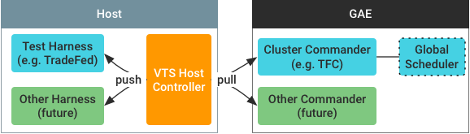

The architecture of VTS test framework integrates with its cloud-based test serving service. A VTS Host Controller runs on a host machine and controls a test harness (e.g., TradeFed) instance as shown below:

The controller pulls commands from a Cluster Commander running as a Google App Engine (GAE) instance, then relays commands and responses between its cluster commander and the test harness instance.
This architecture includes the following advantages: